无论多么庞大的应用，其最终都是由最基本的数据类型累加起来的。就像建一所房子，我们的房子是通过砖块、钢筋、混凝土等最基本的材料通过一定形式的组合，最终成了我们的房子。在编程世界里也一样，一个庞大的应用程序，也是由最基本的元素组成的。在计算机中，元素当然指的就是数据，而使用Kotlin编写应用程序，我们就需要了解Kotlin中有哪些数据类型。
在基础语法中，我们已经接触到了整型Int基本类型，那在Kotlin中还有哪些基本数值类型呢？
下面的表格，列出了Kotlin中的基本数值类型：
| 位宽度 | |
|---|---|
| Double | 64 |
| Float | 32 |
| Long | 64 |
| Int | 32 |
| Short | 16 |
| Byte | 8 |
需要注意的是，字符Char在Kotlin中不属于基本数值类型，是一个独立的数据类型。
接下来，我们看如何定义这些数据类型
xxxxxxxxxx // 双精度浮点型 val d: Double = 32.2 val de: Double = 0.32e100 // 浮点型，通常以F为后缀 val f: Float = 32.2F // 长整型，通常以L为后缀,当数据值较大时，也可以用下划线分隔，更易读。 val l: Long = 43_4343_9943L // 整型 val i: Int = 32 // 短整型 val s: Short = 16 // 二进制类型，以0b开头 val b: Byte = 0b00001011 // 十六进制以0x开头 val h = 0xFF上面的这些变量的赋值，被称为字面常量。
需要注意的是，kotlin中不支持八进制。
在Kotlin中，是没有像Java中的int、float这样的基本数据类型的，所有的类型都是封装类型。在Java中，int的封装类型为Integer，而Kotlin中，只有Int。
每当定义一个变量val age = 10，Kotlin就封装了一个Int的封装类型。那如何比较两个类型呢？
在Kotlin中，==表示表值的大小，===表示比较对象地址。
我们以整型为例：
xxxxxxxxxxval a: Int = 20_000println(a === a) // 比较地址，因为是同一个对象a，因此比较地址输出为`true`val b: Int? = 20_000println(a === b) // b是Int?类型，赋值时经过了装箱动作，因此地址是不同的println(a == b) // a和b的值是相等的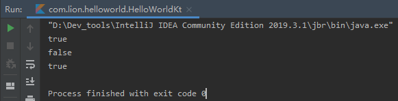
在上面的代码中，我们用到了Int类型的变量和Int?类型的变量，Int表示不可空变量，而Int?表示可空变量。
在实际编程中，有时候不得不将一种类型转换为另一种类型，比如把Int类型转换为Long类型。在Kotlin中，较小的类型并不是较大类型的子类型，所以不能直接隐式地将较小类型转换成较大类型。同样的，较大类型也不能隐式地转换为较小类型。
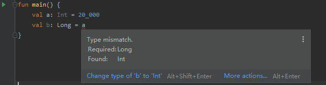
当编写上面的程序时，编译器就会提示类型不匹配，当然程序也无法编译执行。
那我们确实需要转换类型时，怎么办呢？
Kotlin给我们提供了专门的数据类型转换的方法，可以将不同的数据类型进行转换。
xxxxxxxxxxtoByte(): BytetoShort(): ShorttoInt(): InttoLong(): LongtoFloat(): FloattoDouble(): DoubletoChar(): Char但在某些场景下，类型是能够自动转换的，比如表达式中两个值相加，下面代码是能够正常编译运行的。
xxxxxxxxxxval a: Int = 1val b: Long = 2Lval c = a + bprint(c)对于Int和Long类型，支持位运算，Kotlin中提供的位运算符有：
xxxxxxxxxxshl(bits) – 左移位 (Java’s <<)shr(bits) – 右移位 (Java’s >>)ushr(bits) – 无符号右移位 (Java’s >>>)and(bits) – 与or(bits) – 或xor(bits) – 异或inv() – 反向针对这些操作符，有兴趣的同学，可以在编译器中尝试一下。
除了以上的六种数据类型以外，Kotlin还有字符类型Char和布尔类型Boolean。
Char类型使用''包含起来，如：'a'表示字符a。
需要注意的是，在Kotlin中，不能以数字表示Char类型，比如：
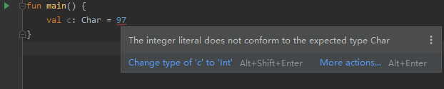
但是我们可以用方法toChar()将整型数字转换成Char类型。
xxxxxxxxxxfun main() { val c: Char = 'a' println(c.toInt())}执行结果：
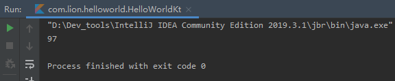
布尔类型只有两个值，true和false。
布尔类型有自己的内置运算符，分别为：|| – 短路逻辑或、&& – 短路逻辑与、!- 逻辑非。
当我们需要用到一个变量定义一组数据时，我们就需要用到数组。
Kotlin的数组用类Array实现，它有一个属性size用来表示数组的大小。
创建一个数组有两种方式：
使用库函数arrayOf
val a = arrayOf(1, 2, 3)
使用工厂函数
val b = Array(3, { i -> (i * 2) })
Kotlin中的数组取值可以和Java里面一样取值：
xxxxxxxxxxval arr = arrayOf(1, 2, 3)arr.get(0)而推荐的方式是使用Kotlin提供的方式：
xxxxxxxxxxval arr = arrayOf(1, 2, 3)print(arr[0])Kotlin中之所以能够这样取值，是因为用[]重载了getter()方法，关于重载，将在后续的学习中逐渐接触到。
除了Array，Kotlin还提供了对应类型的数组，使得效率更加高效。如：ByteArray、ShortArray、IntArray。
说了这么多，好像还有一个字符串类型没有出现，突然觉得这些内容学习起来有些无聊。是真的无聊~~
坚持一下，学习完字符串。
Kotlin的字符串类型是不可变的。通过[]可以方便的取到字符串中对应位置的字符。比如再回到我们的"Hello World"程序：
xxxxxxxxxxval hello: String = "Hello World"print(hello[3])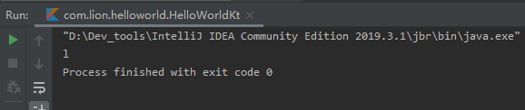
我们看到，通过下标直接取到了位置3的字符l。
如果你有一个诗人的心，那肯定会想到打印一首唐诗出来，那我们怎么样打印呢？
当然，办法有很多种，但是Kotlin提供了比较简单的方式，多行字符串。
比如：
xxxxxxxxxxval text = """ 窗前明月光 疑是地上霜 举头望明月 低头思故乡 """print(text)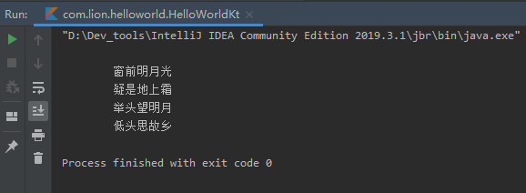
看到没，是不是很完美，格式问题自动解决。
但是我们也看到了，左侧和代码中一样，也预留了一些空格，那我们要左边对齐，要怎么处理呢？
Kotlin的函数trimMargin()解决了这个问题。
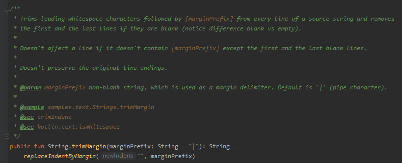
我们通过库函数实现，看到trimMargin()方法可以将指定前缀之前的空白去除，而其默认值是一个|。因此，我们只需要在我们的唐诗每行的文字前面加上|，再调用trimMargin()方法即可。
xxxxxxxxxxval text = """ |窗前明月光 |疑是地上霜 |举头望明月 |低头思故乡 """.trimMargin()print(text)我们看看执行结果：
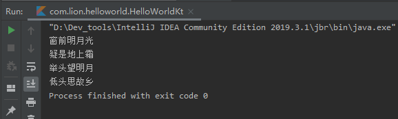
说完字符串，不得不说一下Kotlin的字符串模板。
我们再来回顾一下Hello World代码
xxxxxxxxxxfun main() { print("Hello World")}我们在()中用""包裹了两个单词，用print库函数打印到了控制台上，而Hello World在Kotlin中称为字符串。那如果我们要在打印字符串的同时，再打印出我们通过sum函数求和的结果，要怎么样打印呢？
看一段代码：
xxxxxxxxxxfun main() { val sum: (Int, Int) -> Int = {a, b -> a + b} val result = sum(1, 2) print("求和结果 = $result")}执行结果：
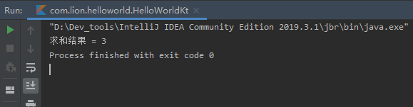
在执行结果中看到，输出了求和结果 = 3，这就用到了Kotlin中的字符串模板。字符串模板是用$符号表示一个变量名或变量值。在上面的程序中，$result就表示取result的值，因此在控制台打印了result的结果。
我们来简化一下上面的程序：
xxxxxxxxxxfun main() { val sum: (Int, Int) -> Int = {a, b -> a + b} print("求和结果 = $sum(1, 2)")}这样的简写，执行结果会不会和上面一样，输出求和结果呢？
我们来执行一下：
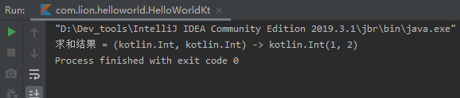
执行结果为打印出了sum的定义，而不是求和结果。这是因为$后的内容被识别成了一个字符串，而不是方法。那我们要直接简化并求和，要怎么写呢？
这就用到了字符串模板的另一种能力。我们继续看下面的代码：
xxxxxxxxxxfun main() { val sum: (Int, Int) -> Int = {a, b -> a + b} print("求和结果 = ${sum(1, 2)}")}我们增加了一对{}来包裹住sum()函数及参数，执行一下：
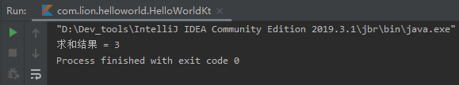
我们看到输出结果和预期一致。也就是说，我们要借助字符串模板输出一个函数的返回值或表达式的结果时，我们只需要将函数或表达式用{}包裹，即可输出它们的结果。